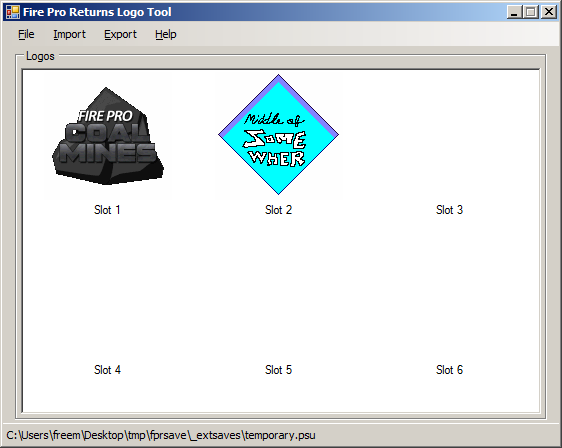

Introduction
FPRLogoTool allows you to import and export logos from Fire Pro Wrestling Returns save data.
Requirements
- .NET Framework v2.0 (so it should hopefully work in Wine)
Supported File Formats
There are a myriad of PS2 save formats out there, and FPRLogoTool only supports a few of them.
- EMS Memory Linker (.psu) – A single game save, 952,320 bytes in length.
-
Raw save data – Raw save data (913,892 bytes length)
ripped from the memory card. Typically has one of three names depending on
the game/save region:
- BISLPM-66082 – NTSC-J/Japanese
- BASLUS-21702 – NTSC-U/North American
- BESLES-55041 – PAL/Europe
Usage
The program is pretty straightforward; the hardest part will be getting the Fire Pro Returns save data, which is beyond the scope of this guide.

The default view upon starting the program. The large box in the middle of the form will contain the logos once a save file is opened (via File → Open).
Once a save is loaded, click on a logo to select it. This will enable the Import and Export options found in the program.
Import Raw Logo
This option imports logo data from the Fire Pro Wrestling Returns raw logo format.
Import from GIF
This option imports a logo from a GIF file. Restrictions with regards to GIF importing are as follows:
- No animated GIFs.
- Images must be 128x128 pixels.
- Image must use 64 colors or less.
- Partial transparency (supported by raw logo format) is not supported.
Export Raw Logo
This option exports the logo data in the raw format expected by Fire Pro Wrestling Returns.
Export to PNG
This option exports the logo as a PNG file, retaining any alpha transparency.
License
This program is released under the terms of the MIT License.